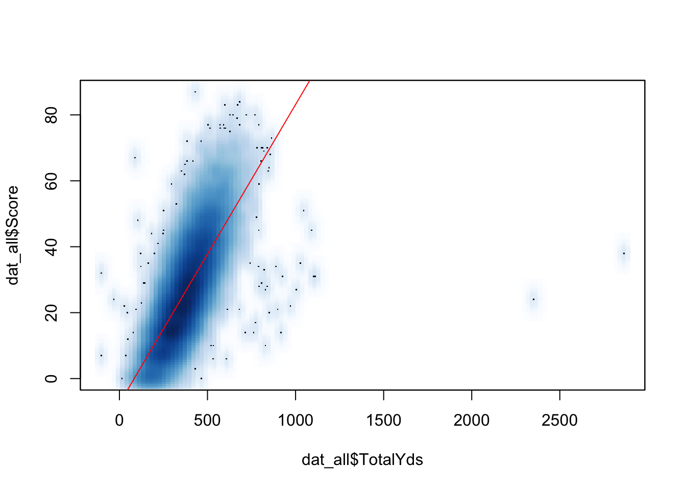
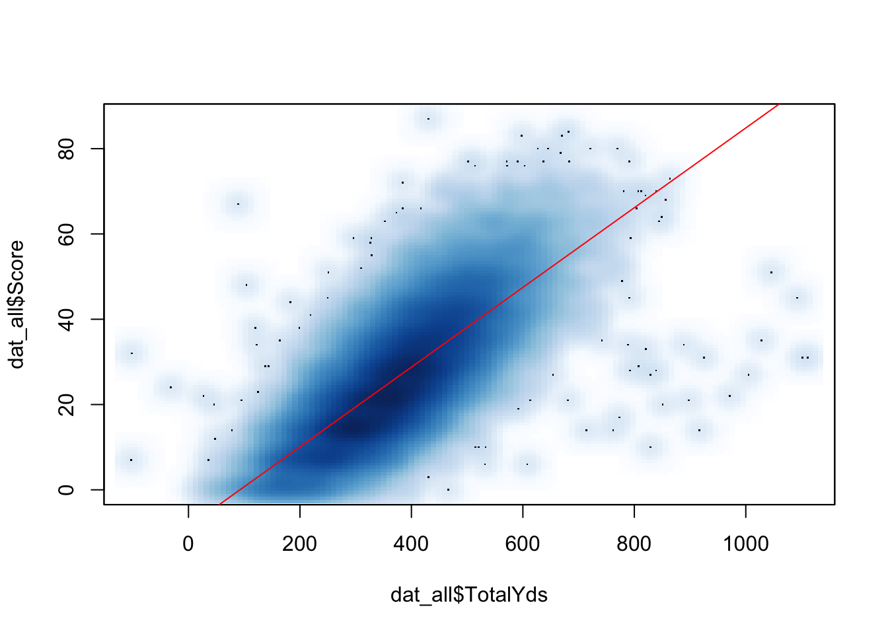

Introduction
The purpose of this document is to explore the most yards in a shutout loss for a college football team. It was inspired after the University of Hawai`i gave up 462 yards in shutting out San Jose State on November 15, 2014. I wanted to see if I could use the dplyr package to explore this question.
library(dplyr)##
## Attaching package: 'dplyr'## The following objects are masked from 'package:stats':
##
## filter, lag## The following objects are masked from 'package:base':
##
## intersect, setdiff, setequal, unionData Source
To obtain a source of data, I downloaded a database of football game statistics from 2000-2013, from http://www.repole.com/sun4cast/data.html. I unzipped this to the working directory.
if(!file.exists("../datasets/cfb/cfbstats.zip")) {
download_url <- "http://www.repole.com/sun4cast/stats/cfbstats.zip"
download.file(download_url, "../datasets/cfb/cfbstats.zip")
unzip("../datasets/cfb/cfbstats.zip", exdir = "../datasets/cfb/")
}Data Processing
The working directory now contained xml and csv versions of each year. I combined the csv versions into one large file. To do this, I read in each csv file and then use rbind_all to combine them.
# Get a list of just the csv files
files <- list.files(path = "../datasets/cfb/")
files <- files[grep(".csv", files)]
# Initialize a data list to hold the files when I read them in
n_files <- length(files)
data_list <- vector("list", n_files)
# Read them in one by one
fpath = "../datasets/cfb/"
for(i in seq_along(files)) {
data_list[[i]] <- read.csv(paste0(fpath, files[i]))
}
# Combine them into one data frame
dat <- bind_rows(data_list)## Warning in bind_rows_(x, .id): Unequal factor levels: coercing to character
## Warning in bind_rows_(x, .id): Unequal factor levels: coercing to character
## Warning in bind_rows_(x, .id): Unequal factor levels: coercing to character
## Warning in bind_rows_(x, .id): Unequal factor levels: coercing to characterrm(data_list)Identifying and Ranking Shutout Games
Now we just wanted to keep the games in which one of the teams scored 0 points. The pertinent variables are ScoreOff and ScoreDef. The variables are somewhat misleadingly categorized as belonging to Offense (the team in the TeamName variable) or Defense (the team in the Opponent variable).
shutouts <- filter(dat, ScoreDef == 0 | ScoreOff == 0)We created variables for total yards for “Offense” and for “Defense”.
shutouts <- mutate(shutouts, TotalYdsOff = PassYdsOff + RushYdsOff,
TotalYdsDef = PassYdsDef + RushYdsDef)We first ranked by most yards the games in which the “Offense” was shutout.
filter(shutouts, ScoreOff == 0) %>%
select(Date, TeamName, ScoreOff, TotalYdsOff) %>%
arrange(desc(TotalYdsOff))## Date TeamName ScoreOff TotalYdsOff
## 1 <NA> <NA> 0 397
## 2 10/20/2007 San Jose State 0 394
## 3 11/26/2011 U.C.L.A. 0 385
## 4 11/03/2001 Texas A & M 0 372
## 5 10/30/2004 Arizona State 0 363
## 6 10/30/2004 Southern Methodist 0 356
## 7 <NA> <NA> 0 355
## 8 11/20/2010 Iowa State 0 332
## 9 09/22/2012 Arizona 0 332
## 10 11/18/2006 Louisiana Tech 0 331
## 11 <NA> <NA> 0 330
## 12 10/25/2003 Stanford 0 326
## 13 10/29/2005 Baylor 0 325
## 14 10/20/2001 Mississippi State 0 322
## 15 11/01/2003 Notre Dame 0 321
## 16 09/18/2004 Tulsa 0 320
## 17 10/25/2003 Troy State 0 314
## 18 10/26/2002 North Carolina 0 312
## 19 10/09/2010 Colorado 0 311
## 20 10/30/2004 Stanford 0 307
## 21 09/05/2009 Nevada-Reno 0 307
## 22 10/04/2008 Maryland 0 302
## 23 10/06/2007 Louisiana Tech 0 301
## 24 09/22/2007 Utah 0 300
## 25 11/12/2005 Connecticut 0 299
## 26 <NA> <NA> 0 297
## 27 08/30/2003 North Carolina 0 295
## 28 11/06/2004 Western Michigan 0 295
## 29 11/29/2013 S-M-U 0 295
## 30 11/08/2008 Notre Dame 0 292
## 31 <NA> <NA> 0 290
## 32 11/27/2010 Oregon State 0 285
## 33 10/06/2012 UTEP 0 285
## 34 09/10/2011 Oregon State 0 284
## 35 08/31/2006 Kent State 0 282
## 36 09/01/2007 Baylor 0 282
## 37 09/11/2004 Colorado State 0 281
## 38 11/26/2011 New Mexico State 0 279
## 39 11/23/2013 Kansas 0 279
## 40 09/20/2008 Wyoming 0 273
## 41 08/30/2003 Duke 0 272
## 42 10/25/2003 Arkansas State 0 272
## 43 09/11/2004 Western Michigan 0 272
## 44 11/09/2005 Cincinnati 0 269
## 45 09/19/2009 Tulsa 0 269
## 46 10/06/2001 Penn State 0 269
## 47 09/28/2002 Western Michigan 0 268
## 48 09/06/2008 Louisiana Tech 0 267
## 49 11/03/2012 Massachusetts 0 267
## 50 <NA> <NA> 0 267
## 51 09/22/2012 Bowling Green 0 266
## 52 10/30/2010 Washington State 0 264
## 53 10/01/2011 Miami-Ohio 0 264
## 54 09/13/2003 Texas-El Paso 0 261
## 55 10/25/2003 Baylor 0 260
## 56 08/30/2008 Kent State 0 260
## 57 11/03/2012 Kentucky 0 260
## 58 <NA> <NA> 0 260
## 59 09/30/2006 Louisiana Tech 0 259
## 60 10/21/2006 Colorado State 0 259
## 61 09/27/2008 Eastern Michigan 0 259
## 62 10/19/2013 Arkansas 0 256
## 63 09/09/2006 South Carolina 0 255
## 64 09/21/2013 Idaho 0 253
## 65 10/19/2002 Baylor 0 251
## 66 11/25/2008 Northern Illinois 0 251
## 67 08/30/2003 Idaho 0 250
## 68 11/24/2007 No Carolina State 0 250
## 69 09/25/2010 Boston College 0 250
## 70 09/09/2006 Utah State 0 249
## 71 <NA> <NA> 0 249
## 72 <NA> <NA> 0 249
## 73 11/09/2002 Idaho 0 248
## 74 <NA> <NA> 0 248
## 75 10/23/2004 Arizona 0 245
## 76 09/28/2002 Central Michigan 0 242
## 77 09/23/2006 Utah State 0 242
## 78 11/10/2007 Temple 0 242
## 79 09/14/2002 Army 0 241
## 80 10/26/2002 UL-Lafayette 0 241
## 81 11/26/2011 Virginia 0 241
## 82 09/08/2012 New Mexico 0 241
## 83 <NA> <NA> 0 241
## 84 10/09/2004 Texas 0 240
## 85 10/28/2006 Purdue 0 240
## 86 09/04/2004 UL-Monroe 0 239
## 87 09/13/2008 U.C.L.A. 0 239
## 88 09/05/2004 Kentucky 0 238
## 89 11/10/2012 Auburn 0 238
## 90 10/18/2006 Florida Atlantic 0 237
## 91 10/27/2007 Arkansas State 0 237
## 92 11/10/2001 Temple 0 237
## 93 11/10/2007 Utah State 0 236
## 94 10/08/2011 Ball State 0 236
## 95 <NA> <NA> 0 236
## 96 11/24/2001 New Mexico State 0 236
## 97 10/11/2003 Arkansas State 0 235
## 98 10/05/2013 Maryland 0 234
## 99 11/09/2002 South Carolina 0 233
## 100 09/11/2010 U.C.L.A. 0 233
## 101 11/09/2013 Florida Intl 0 233
## 102 09/25/2004 Buffalo 0 232
## 103 10/22/2005 Akron 0 232
## 104 10/23/2004 Illinois 0 231
## 105 10/25/2003 Iowa State 0 230
## 106 09/09/2006 Temple 0 230
## 107 09/19/2009 Wyoming 0 230
## 108 11/05/2011 Middle Tennessee 0 230
## 109 09/29/2001 Alabama-Birmingham 0 230
## 110 10/12/2002 Baylor 0 229
## 111 10/11/2008 Arizona State 0 229
## 112 <NA> <NA> 0 229
## 113 09/18/2010 Kent State 0 228
## 114 10/14/2006 Kentucky 0 227
## 115 10/02/2004 New Mexico State 0 226
## 116 10/19/2013 Purdue 0 226
## 117 09/13/2008 Florida Atlantic 0 225
## 118 11/01/2008 Washington State 0 225
## 119 11/07/2009 Wyoming 0 225
## 120 <NA> <NA> 0 225
## 121 09/08/2012 Western Kentucky 0 224
## 122 10/09/2010 Memphis 0 223
## 123 10/29/2011 New Mexico 0 223
## 124 09/25/2004 North Carolina 0 222
## 125 09/26/2009 UL-Lafayette 0 222
## 126 09/10/2005 UL-Monroe 0 220
## 127 08/30/2008 UL-Monroe 0 220
## 128 09/14/2002 Texas-El Paso 0 219
## 129 10/18/2008 Wake Forest 0 219
## 130 09/22/2012 Kentucky 0 219
## 131 09/06/2008 Florida Intl 0 218
## 132 <NA> <NA> 0 217
## 133 09/21/2002 Alabama-Birmingham 0 216
## 134 11/14/2007 Akron 0 216
## 135 10/31/2009 Tulane 0 216
## 136 <NA> <NA> 0 216
## 137 09/28/2002 Tulane 0 215
## 138 <NA> <NA> 0 215
## 139 10/27/2001 Virginia 0 215
## 140 11/06/2004 Maryland 0 214
## 141 09/29/2001 Mississippi State 0 214
## 142 11/24/2001 UL-Lafayette 0 214
## 143 08/30/2002 Tulsa 0 213
## 144 11/02/2013 Wake Forest 0 213
## 145 09/10/2011 U-A-B 0 212
## 146 08/31/2013 Massachusetts 0 212
## 147 10/30/2003 Troy State 0 211
## 148 11/11/2006 North Carolina 0 211
## 149 10/26/2002 Texas-El Paso 0 210
## 150 09/02/2006 Duke 0 210
## 151 11/11/2006 Florida Intl 0 210
## 152 09/19/2009 Toledo 0 210
## 153 <NA> <NA> 0 210
## 154 11/29/2008 U-C-F 0 209
## 155 11/17/2012 Wake Forest 0 209
## 156 10/01/2005 Oklahoma State 0 208
## 157 11/04/2006 Stanford 0 208
## 158 10/02/2010 New Mexico State 0 208
## 159 10/19/2013 Syracuse 0 208
## 160 09/10/2005 Mississippi State 0 207
## 161 11/11/2006 Utah State 0 207
## 162 10/01/2005 Arizona 0 206
## 163 09/28/2013 Mississippi 0 205
## 164 09/08/2001 Buffalo 0 205
## 165 11/24/2001 Vanderbilt 0 205
## 166 10/04/2003 Army 0 204
## 167 09/29/2012 Idaho 0 204
## 168 11/25/2006 Florida Intl 0 203
## 169 12/01/2012 Middle Tennessee 0 203
## 170 09/01/2001 Kent State 0 203
## 171 10/19/2002 Northwestern 0 202
## 172 10/12/2013 Western Michigan 0 202
## 173 11/05/2005 Baylor 0 201
## 174 10/04/2008 Wyoming 0 201
## 175 11/21/2009 Minnesota 0 201
## 176 09/18/2010 North Texas 0 201
## 177 09/09/2006 Florida Atlantic 0 200
## 178 09/27/2002 New Mexico 0 199
## 179 08/30/2003 Clemson 0 199
## 180 11/18/2006 Idaho 0 199
## 181 10/25/2008 Colorado 0 199
## 182 09/17/2011 Kent State 0 199
## 183 <NA> <NA> 0 198
## 184 09/05/2004 Syracuse 0 197
## 185 12/03/2011 New Mexico 0 197
## 186 <NA> <NA> 0 197
## 187 11/23/2002 Vanderbilt 0 196
## 188 11/15/2003 Arizona 0 195
## 189 10/23/2010 Connecticut 0 195
## 190 <NA> <NA> 0 195
## 191 09/12/2009 Miami-Ohio 0 194
## 192 11/27/2003 Mississippi State 0 192
## 193 11/23/2002 Missouri 0 191
## 194 11/22/2003 Vanderbilt 0 191
## 195 10/09/2010 Wyoming 0 191
## 196 09/03/2011 UL-Monroe 0 191
## 197 10/06/2001 Eastern Michigan 0 191
## 198 11/13/2010 UL-Monroe 0 190
## 199 10/08/2011 Vanderbilt 0 190
## 200 09/21/2013 Kent State 0 190
## 201 09/29/2001 Baylor 0 190
## 202 09/17/2005 Ohio 0 189
## 203 11/10/2007 Miami-Florida 0 189
## 204 09/05/2009 Miami-Ohio 0 188
## 205 10/19/2002 Kent State 0 187
## 206 <NA> <NA> 0 186
## 207 <NA> <NA> 0 186
## 208 09/27/2003 Northwestern 0 185
## 209 09/23/2006 Idaho 0 185
## 210 09/25/2010 Wake Forest 0 185
## 211 11/23/2013 Colorado State 0 185
## 212 11/17/2001 Syracuse 0 185
## 213 11/01/2008 Washington 0 184
## 214 <NA> <NA> 0 184
## 215 <NA> <NA> 0 184
## 216 11/04/2006 Virginia 0 183
## 217 10/16/2010 Iowa State 0 183
## 218 11/12/2005 Syracuse 0 182
## 219 10/19/2006 North Carolina 0 182
## 220 10/28/2006 Minnesota 0 182
## 221 11/11/2006 Kent State 0 182
## 222 <NA> <NA> 0 182
## 223 09/11/2004 Wyoming 0 181
## 224 09/10/2005 New Mexico State 0 181
## 225 <NA> <NA> 0 179
## 226 09/18/2004 Louisiana Tech 0 177
## 227 11/04/2006 Arkansas State 0 177
## 228 10/01/2011 Minnesota 0 177
## 229 09/29/2001 UL-Monroe 0 177
## 230 11/23/2002 Rutgers 0 176
## 231 09/27/2003 Army 0 176
## 232 <NA> <NA> 0 176
## 233 <NA> <NA> 0 176
## 234 10/19/2002 Buffalo 0 175
## 235 11/08/2003 Nevada-Las Vegas 0 175
## 236 09/21/2013 West Virginia 0 175
## 237 <NA> <NA> 0 175
## 238 10/17/2009 Wyoming 0 174
## 239 09/06/2013 Florida Intl 0 173
## 240 11/23/2013 Massachusetts 0 173
## 241 10/06/2001 West Virginia 0 173
## 242 11/30/2002 Kentucky 0 172
## 243 11/12/2013 Ohio 0 172
## 244 10/19/2002 Central Michigan 0 170
## 245 09/11/2004 Southern Methodist 0 170
## 246 11/29/2008 Auburn 0 170
## 247 09/26/2009 Illinois 0 170
## 248 09/17/2011 North Texas 0 169
## 249 <NA> <NA> 0 168
## 250 09/30/2006 Stanford 0 166
## 251 10/29/2011 No Carolina State 0 166
## 252 08/31/2013 UL-Monroe 0 166
## 253 09/08/2001 Western Michigan 0 166
## 254 10/20/2007 Notre Dame 0 165
## 255 11/05/2011 North Carolina 0 165
## 256 <NA> <NA> 0 165
## 257 08/30/2003 Auburn 0 164
## 258 09/16/2006 U-A-B 0 163
## 259 09/15/2007 San Jose State 0 163
## 260 11/28/2009 Washington State 0 163
## 261 11/24/2012 Auburn 0 163
## 262 11/20/2010 Colorado State 0 162
## 263 <NA> <NA> 0 162
## 264 <NA> <NA> 0 162
## 265 08/31/2006 Mississippi State 0 161
## 266 09/09/2006 Mississippi State 0 161
## 267 10/14/2006 Navy 0 161
## 268 10/02/2010 Colorado State 0 161
## 269 10/23/2010 Buffalo 0 161
## 270 11/03/2001 Ohio 0 161
## 271 09/07/2002 UL-Monroe 0 160
## 272 10/31/2009 Nevada-Las Vegas 0 160
## 273 10/01/2005 Ball State 0 159
## 274 11/12/2009 South Florida 0 159
## 275 09/22/2012 Tulane 0 159
## 276 11/01/2008 Arkansas State 0 158
## 277 09/16/2006 Temple 0 157
## 278 10/04/2008 Toledo 0 157
## 279 10/20/2001 Arkansas State 0 157
## 280 11/22/2003 Brigham Young 0 156
## 281 10/30/2004 Utah State 0 156
## 282 11/20/2004 Baylor 0 156
## 283 10/15/2011 Buffalo 0 155
## 284 12/06/2008 Army 0 154
## 285 10/30/2010 Akron 0 154
## 286 11/28/2003 Ohio 0 153
## 287 09/24/2005 Idaho 0 153
## 288 09/09/2006 U-C-F 0 153
## 289 11/08/2003 Mississippi State 0 152
## 290 <NA> <NA> 0 152
## 291 11/03/2001 Temple 0 152
## 292 10/04/2003 Troy State 0 150
## 293 11/01/2008 New Mexico State 0 150
## 294 10/20/2001 Wyoming 0 150
## 295 09/28/2012 Hawaii 0 149
## 296 11/24/2007 Oregon 0 148
## 297 11/08/2008 San Jose State 0 148
## 298 12/03/2011 Florida Atlantic 0 148
## 299 08/30/2007 Mississippi State 0 146
## 300 08/31/2002 North Texas 0 145
## 301 09/13/2003 Notre Dame 0 144
## 302 09/03/2005 Ball State 0 144
## 303 09/29/2012 Navy 0 144
## 304 11/02/2002 Troy State 0 142
## 305 09/18/2004 Ball State 0 142
## 306 09/07/2002 Ohio 0 141
## 307 10/31/2009 Purdue 0 141
## 308 11/08/2003 Iowa State 0 140
## 309 09/23/2006 Troy 0 140
## 310 10/16/2010 Vanderbilt 0 140
## 311 <NA> <NA> 0 140
## 312 11/10/2001 Ohio 0 140
## 313 09/16/2006 Duke 0 139
## 314 11/11/2006 Florida State 0 139
## 315 09/22/2007 Miami-Ohio 0 139
## 316 09/24/2011 Memphis 0 139
## 317 08/28/2008 No Carolina State 0 138
## 318 10/17/2009 Minnesota 0 138
## 319 11/03/2001 Tulsa 0 138
## 320 09/01/2005 Buffalo 0 137
## 321 09/15/2012 Arkansas 0 137
## 322 <NA> <NA> 0 135
## 323 09/17/2005 Eastern Michigan 0 134
## 324 11/22/2008 Minnesota 0 134
## 325 10/29/2011 Memphis 0 134
## 326 10/13/2012 Illinois 0 134
## 327 08/31/2002 Maryland 0 133
## 328 10/04/2008 Duke 0 132
## 329 09/28/2002 Oregon State 0 131
## 330 11/15/2008 UL-Monroe 0 131
## 331 09/04/2004 North Texas 0 130
## 332 09/25/2004 Mississippi State 0 130
## 333 11/15/2008 Washington State 0 130
## 334 11/09/2002 Baylor 0 127
## 335 09/09/2006 Illinois 0 126
## 336 09/15/2012 Wake Forest 0 126
## 337 09/08/2001 Rutgers 0 126
## 338 11/19/2010 Fresno State 0 125
## 339 11/10/2007 Wyoming 0 122
## 340 10/15/2011 Florida Atlantic 0 121
## 341 <NA> <NA> 0 121
## 342 <NA> <NA> 0 120
## 343 11/24/2006 Akron 0 119
## 344 11/03/2007 New Mexico 0 119
## 345 10/23/2010 Purdue 0 118
## 346 10/20/2012 Massachusetts 0 118
## 347 10/18/2008 Washington State 0 116
## 348 11/03/2012 Colorado 0 116
## 349 11/02/2013 Purdue 0 116
## 350 11/02/2002 Kansas 0 115
## 351 09/16/2006 San Diego State 0 115
## 352 09/22/2001 New Mexico State 0 115
## 353 10/14/2006 Florida Intl 0 114
## 354 09/01/2007 Florida Intl 0 114
## 355 11/17/2001 U.C.L.A. 0 114
## 356 10/23/2004 Washington 0 113
## 357 11/24/2006 Eastern Michigan 0 112
## 358 11/25/2006 Virginia 0 112
## 359 08/30/2008 Idaho 0 112
## 360 09/25/2010 Ball State 0 112
## 361 11/10/2001 Rutgers 0 112
## 362 09/10/2005 Buffalo 0 111
## 363 10/08/2011 Nevada-Las Vegas 0 110
## 364 11/28/2009 Oklahoma State 0 109
## 365 09/14/2002 Baylor 0 107
## 366 09/04/2010 New Mexico 0 107
## 367 10/30/2010 Washington 0 107
## 368 10/28/2006 Arkansas State 0 104
## 369 11/05/2005 Mississippi State 0 103
## 370 09/30/2006 North Texas 0 103
## 371 09/08/2007 Syracuse 0 103
## 372 09/22/2001 Rutgers 0 102
## 373 09/30/2006 Duke 0 100
## 374 10/11/2003 U-C-F 0 98
## 375 09/16/2006 Utah State 0 98
## 376 11/20/2004 Buffalo 0 96
## 377 09/23/2006 Middle Tennessee 0 95
## 378 10/28/2006 Buffalo 0 92
## 379 09/01/2001 Ball State 0 92
## 380 10/12/2002 Rutgers 0 90
## 381 09/15/2007 Middle Tennessee 0 90
## 382 09/03/2011 Akron 0 90
## 383 10/07/2007 New Mexico State 0 89
## 384 11/18/2006 San Diego State 0 87
## 385 09/21/2013 Miami-Ohio 0 87
## 386 10/22/2011 New Mexico 0 85
## 387 09/18/2004 Akron 0 84
## 388 <NA> <NA> 0 84
## 389 11/16/2002 Navy 0 82
## 390 10/16/2010 San Jose State 0 80
## 391 09/15/2007 Notre Dame 0 79
## 392 11/11/2006 Temple 0 74
## 393 10/05/2002 UL-Lafayette 0 70
## 394 10/22/2005 Florida Atlantic 0 68
## 395 11/10/2001 Kansas 0 67
## 396 10/31/2009 New Mexico State 0 62
## 397 08/30/2012 Massachusetts 0 59
## 398 11/08/2003 Texas A & M 0 54
## 399 <NA> <NA> 0 51
## 400 11/21/2009 Tulane 0 50
## 401 09/10/2011 Florida Atlantic 0 48
## 402 10/29/2011 Kansas 0 46
## 403 09/10/2005 Temple 0 45
## 404 11/28/2008 Mississippi State 0 37
## 405 09/10/2005 Duke 0 35
## 406 09/21/2013 Florida Intl 0 30We then ranked by most yards the games in which the “Defense” was shutout.
filter(shutouts, ScoreDef == 0) %>%
select(Date, Opponent, ScoreDef, TotalYdsDef) %>%
arrange(desc(TotalYdsDef))## Date Opponent ScoreDef TotalYdsDef
## 1 09/08/2012 Stephen F Austin 0 466
## 2 <NA> Kentucky 0 397
## 3 10/20/2007 San Jose State 0 394
## 4 11/26/2011 U.C.L.A. 0 385
## 5 11/03/2001 Texas A & M 0 372
## 6 10/30/2004 Arizona State 0 363
## 7 10/30/2004 Southern Methodist 0 356
## 8 <NA> Michigan State 0 355
## 9 11/20/2010 Iowa State 0 332
## 10 09/22/2012 Arizona 0 332
## 11 11/18/2006 Louisiana Tech 0 331
## 12 <NA> Oklahoma State 0 330
## 13 10/25/2003 Stanford 0 326
## 14 11/20/2004 Illinois State 0 326
## 15 10/29/2005 Baylor 0 325
## 16 10/20/2001 Mississippi State 0 322
## 17 11/01/2003 Notre Dame 0 321
## 18 09/18/2004 Tulsa 0 320
## 19 09/25/2010 Northern Iowa 0 320
## 20 10/25/2003 Troy State 0 314
## 21 10/26/2002 North Carolina 0 312
## 22 10/09/2010 Colorado 0 311
## 23 10/30/2004 Stanford 0 307
## 24 09/05/2009 Nevada-Reno 0 307
## 25 10/04/2008 Maryland 0 302
## 26 10/06/2007 Louisiana Tech 0 301
## 27 09/22/2007 Utah 0 300
## 28 11/12/2005 Connecticut 0 299
## 29 09/08/2001 Northern Iowa 0 299
## 30 09/21/2013 Austin Peay 0 298
## 31 08/30/2003 North Carolina 0 295
## 32 11/06/2004 Western Michigan 0 295
## 33 11/29/2013 S-M-U 0 295
## 34 <NA> Connecticut 0 294
## 35 11/08/2008 Notre Dame 0 292
## 36 <NA> Virginia 0 290
## 37 11/27/2010 Oregon State 0 285
## 38 10/06/2012 UTEP 0 285
## 39 09/10/2011 Oregon State 0 284
## 40 08/31/2006 Kent State 0 282
## 41 09/01/2007 Baylor 0 282
## 42 09/11/2004 Colorado State 0 281
## 43 11/26/2011 New Mexico State 0 279
## 44 11/23/2013 Kansas 0 279
## 45 08/29/2013 Sacramento State 0 278
## 46 09/20/2008 Wyoming 0 273
## 47 08/30/2003 Duke 0 272
## 48 10/25/2003 Arkansas State 0 272
## 49 09/11/2004 Western Michigan 0 272
## 50 <NA> North Texas 0 271
## 51 09/02/2010 North Dakota 0 270
## 52 08/30/2013 Northern Arizona 0 270
## 53 11/09/2005 Cincinnati 0 269
## 54 09/19/2009 Tulsa 0 269
## 55 10/06/2001 Penn State 0 269
## 56 09/28/2002 Western Michigan 0 268
## 57 09/08/2001 Tennessee Tech 0 268
## 58 09/06/2008 Louisiana Tech 0 267
## 59 09/27/2008 Rhode Island 0 267
## 60 11/03/2012 Massachusetts 0 267
## 61 <NA> Iowa 0 267
## 62 09/22/2012 Bowling Green 0 266
## 63 10/30/2010 Washington State 0 264
## 64 10/01/2011 Miami-Ohio 0 264
## 65 09/07/2002 Western Carolina 0 261
## 66 09/13/2003 Texas-El Paso 0 261
## 67 08/23/2003 Grambling 0 260
## 68 10/25/2003 Baylor 0 260
## 69 09/01/2007 Northeastern 0 260
## 70 08/30/2008 Kent State 0 260
## 71 11/03/2012 Kentucky 0 260
## 72 <NA> Marshall 0 260
## 73 09/30/2006 Louisiana Tech 0 259
## 74 10/21/2006 Colorado State 0 259
## 75 09/27/2008 Eastern Michigan 0 259
## 76 11/05/2005 Appalachian State 0 256
## 77 10/19/2013 Arkansas 0 256
## 78 09/09/2006 South Carolina 0 255
## 79 08/31/2013 Elon 0 253
## 80 09/21/2013 Idaho 0 253
## 81 10/19/2002 Baylor 0 251
## 82 11/25/2008 Northern Illinois 0 251
## 83 08/30/2003 Idaho 0 250
## 84 09/02/2006 Eastern Kentucky 0 250
## 85 11/24/2007 No Carolina State 0 250
## 86 09/25/2010 Boston College 0 250
## 87 09/09/2006 Utah State 0 249
## 88 <NA> UL-Lafayette 0 249
## 89 <NA> Wyoming 0 249
## 90 11/09/2002 Idaho 0 248
## 91 <NA> Baylor 0 248
## 92 10/23/2004 Arizona 0 245
## 93 09/28/2002 Central Michigan 0 242
## 94 09/23/2006 Utah State 0 242
## 95 11/10/2007 Temple 0 242
## 96 11/17/2012 Jacksonville St 0 242
## 97 09/14/2002 Army 0 241
## 98 10/26/2002 UL-Lafayette 0 241
## 99 09/24/2011 Georgia State 0 241
## 100 11/26/2011 Virginia 0 241
## 101 09/08/2012 New Mexico 0 241
## 102 <NA> Rutgers 0 241
## 103 10/09/2004 Texas 0 240
## 104 10/28/2006 Purdue 0 240
## 105 09/04/2004 UL-Monroe 0 239
## 106 09/13/2008 U.C.L.A. 0 239
## 107 09/05/2004 Kentucky 0 238
## 108 11/10/2012 Auburn 0 238
## 109 10/18/2006 Florida Atlantic 0 237
## 110 10/27/2007 Arkansas State 0 237
## 111 11/10/2001 Temple 0 237
## 112 09/20/2003 S E Louisiana 0 236
## 113 11/10/2007 Utah State 0 236
## 114 10/08/2011 Ball State 0 236
## 115 <NA> Baylor 0 236
## 116 11/24/2001 New Mexico State 0 236
## 117 10/11/2003 Arkansas State 0 235
## 118 10/05/2013 Maryland 0 234
## 119 09/21/2002 Portland State 0 233
## 120 11/09/2002 South Carolina 0 233
## 121 09/15/2007 Alcorn State 0 233
## 122 09/11/2010 U.C.L.A. 0 233
## 123 11/09/2013 Florida Intl 0 233
## 124 09/25/2004 Buffalo 0 232
## 125 10/22/2005 Akron 0 232
## 126 10/23/2004 Illinois 0 231
## 127 09/05/2009 UC-Davis 0 231
## 128 10/25/2003 Iowa State 0 230
## 129 09/09/2006 Temple 0 230
## 130 09/19/2009 Wyoming 0 230
## 131 11/05/2011 Middle Tennessee 0 230
## 132 09/29/2001 Alabama-Birmingham 0 230
## 133 10/13/2001 Liberty 0 230
## 134 10/12/2002 Baylor 0 229
## 135 10/11/2008 Arizona State 0 229
## 136 <NA> Mid Tennessee St 0 229
## 137 09/18/2010 Kent State 0 228
## 138 10/14/2006 Kentucky 0 227
## 139 10/02/2004 New Mexico State 0 226
## 140 10/19/2013 Purdue 0 226
## 141 09/13/2008 Florida Atlantic 0 225
## 142 11/01/2008 Washington State 0 225
## 143 11/07/2009 Wyoming 0 225
## 144 <NA> Penn State 0 225
## 145 09/08/2012 Western Kentucky 0 224
## 146 10/09/2010 Memphis 0 223
## 147 10/29/2011 New Mexico 0 223
## 148 09/02/2004 Tennessee-Martin 0 222
## 149 09/25/2004 North Carolina 0 222
## 150 09/26/2009 UL-Lafayette 0 222
## 151 09/13/2003 Eastern Illinois 0 221
## 152 09/10/2005 UL-Monroe 0 220
## 153 08/30/2008 UL-Monroe 0 220
## 154 <NA> Weber State 0 220
## 155 09/14/2002 Texas-El Paso 0 219
## 156 09/09/2006 S E Louisiana 0 219
## 157 10/18/2008 Wake Forest 0 219
## 158 09/22/2012 Kentucky 0 219
## 159 09/06/2008 Florida Intl 0 218
## 160 <NA> Alabama 0 217
## 161 09/21/2002 Alabama-Birmingham 0 216
## 162 11/11/2006 North Carolina 0 216
## 163 11/14/2007 Akron 0 216
## 164 10/31/2009 Tulane 0 216
## 165 <NA> Buffalo 0 216
## 166 09/28/2002 Tulane 0 215
## 167 <NA> Central Michigan 0 215
## 168 10/27/2001 Virginia 0 215
## 169 11/06/2004 Maryland 0 214
## 170 11/17/2012 Wake Forest 0 214
## 171 09/29/2001 Mississippi State 0 214
## 172 11/24/2001 UL-Lafayette 0 214
## 173 08/30/2002 Tulsa 0 213
## 174 11/02/2013 Wake Forest 0 213
## 175 09/10/2011 U-A-B 0 212
## 176 08/31/2013 Massachusetts 0 212
## 177 10/30/2003 Troy State 0 211
## 178 08/31/2013 Austin Peay 0 211
## 179 10/26/2002 Texas-El Paso 0 210
## 180 11/11/2006 Florida Intl 0 210
## 181 09/19/2009 Toledo 0 210
## 182 <NA> Louisville 0 210
## 183 11/29/2008 U-C-F 0 209
## 184 11/04/2006 Stanford 0 208
## 185 10/02/2010 New Mexico State 0 208
## 186 10/19/2013 Syracuse 0 208
## 187 09/10/2005 Mississippi State 0 207
## 188 09/02/2006 Northeastern 0 207
## 189 11/11/2006 Utah State 0 207
## 190 09/02/2010 Rhode Island 0 207
## 191 09/17/2011 Stephen F Austin 0 207
## 192 <NA> Illinois State 0 207
## 193 10/01/2005 Arizona 0 206
## 194 09/28/2013 Mississippi 0 205
## 195 09/08/2001 Buffalo 0 205
## 196 11/24/2001 Vanderbilt 0 205
## 197 10/04/2003 Army 0 204
## 198 08/28/2004 Indiana State 0 204
## 199 10/01/2005 Oklahoma State 0 203
## 200 11/25/2006 Florida Intl 0 203
## 201 12/01/2012 Middle Tennessee 0 203
## 202 09/01/2001 Kent State 0 203
## 203 10/19/2002 Northwestern 0 202
## 204 10/12/2013 Western Michigan 0 202
## 205 11/05/2005 Baylor 0 201
## 206 10/04/2008 Wyoming 0 201
## 207 11/21/2009 Minnesota 0 201
## 208 09/18/2010 North Texas 0 201
## 209 09/09/2006 Florida Atlantic 0 200
## 210 09/27/2002 New Mexico 0 199
## 211 08/30/2003 Clemson 0 199
## 212 10/16/2004 Florida A+M 0 199
## 213 11/18/2006 Idaho 0 199
## 214 10/25/2008 Colorado 0 199
## 215 09/17/2011 Kent State 0 199
## 216 <NA> Houston 0 198
## 217 09/05/2004 Syracuse 0 197
## 218 12/03/2011 New Mexico 0 197
## 219 <NA> New Mexico State 0 197
## 220 11/23/2002 Vanderbilt 0 196
## 221 11/15/2003 Arizona 0 195
## 222 10/23/2010 Connecticut 0 195
## 223 <NA> UL-Monroe 0 195
## 224 09/06/2008 Richmond 0 194
## 225 09/12/2009 Miami-Ohio 0 194
## 226 09/01/2012 Lamar 0 194
## 227 11/27/2003 Mississippi State 0 192
## 228 11/23/2002 Missouri 0 191
## 229 11/22/2003 Vanderbilt 0 191
## 230 09/18/2004 Western Carolina 0 191
## 231 10/09/2010 Wyoming 0 191
## 232 09/03/2011 UL-Monroe 0 191
## 233 10/06/2001 Eastern Michigan 0 191
## 234 11/13/2010 UL-Monroe 0 190
## 235 10/08/2011 Vanderbilt 0 190
## 236 09/21/2013 Kent State 0 190
## 237 09/29/2001 Baylor 0 190
## 238 09/17/2005 Ohio 0 189
## 239 11/10/2007 Miami-Florida 0 189
## 240 09/29/2012 Idaho 0 189
## 241 09/05/2009 Miami-Ohio 0 188
## 242 09/19/2009 Charleston Southern 0 188
## 243 10/19/2002 Kent State 0 187
## 244 09/04/2010 Coastal Carolina 0 186
## 245 <NA> Indiana 0 186
## 246 <NA> Rice 0 186
## 247 09/27/2003 Northwestern 0 185
## 248 09/23/2006 Idaho 0 185
## 249 09/03/2009 Coastal Carolina 0 185
## 250 09/25/2010 Wake Forest 0 185
## 251 11/23/2013 Colorado State 0 185
## 252 09/29/2001 Northwestern St(LA) 0 185
## 253 11/17/2001 Syracuse 0 185
## 254 11/01/2008 Washington 0 184
## 255 08/31/2013 No Carolina Central 0 184
## 256 09/07/2013 Gardner-Webb 0 184
## 257 <NA> New Mexico State 0 184
## 258 <NA> Wyoming 0 184
## 259 09/18/2004 Louisiana Tech 0 183
## 260 11/04/2006 Virginia 0 183
## 261 10/16/2010 Iowa State 0 183
## 262 11/12/2005 Syracuse 0 182
## 263 10/19/2006 North Carolina 0 182
## 264 10/28/2006 Minnesota 0 182
## 265 11/11/2006 Kent State 0 182
## 266 <NA> Temple 0 182
## 267 09/11/2004 Wyoming 0 181
## 268 09/10/2005 New Mexico State 0 181
## 269 09/01/2001 East Tennessee St 0 180
## 270 <NA> UL-Lafayette 0 179
## 271 11/04/2006 Arkansas State 0 177
## 272 10/01/2011 Minnesota 0 177
## 273 09/29/2001 UL-Monroe 0 177
## 274 11/23/2002 Rutgers 0 176
## 275 09/27/2003 Army 0 176
## 276 09/06/2008 Western Carolina 0 176
## 277 <NA> UL-Monroe 0 176
## 278 <NA> Southern Methodist 0 176
## 279 10/19/2002 Buffalo 0 175
## 280 08/30/2003 Wofford 0 175
## 281 11/08/2003 Nevada-Las Vegas 0 175
## 282 09/21/2013 West Virginia 0 175
## 283 11/23/2013 Chattanooga 0 175
## 284 <NA> Eastern Michigan 0 175
## 285 10/17/2009 Wyoming 0 174
## 286 09/06/2013 Florida Intl 0 173
## 287 11/23/2013 Massachusetts 0 173
## 288 10/06/2001 West Virginia 0 173
## 289 11/30/2002 Kentucky 0 172
## 290 11/12/2013 Ohio 0 172
## 291 09/05/2009 Alcorn State 0 171
## 292 09/04/2010 Nicholls State 0 171
## 293 10/19/2002 Central Michigan 0 170
## 294 09/11/2004 Southern Methodist 0 170
## 295 11/29/2008 Auburn 0 170
## 296 09/26/2009 Illinois 0 170
## 297 09/01/2012 Elon 0 170
## 298 09/17/2011 North Texas 0 169
## 299 10/22/2005 Florida Atlantic 0 168
## 300 <NA> Central Michigan 0 168
## 301 09/04/2004 Richmond 0 167
## 302 09/05/2013 Sacramento State 0 167
## 303 <NA> Western Carolina 0 167
## 304 09/30/2006 Stanford 0 166
## 305 10/29/2011 No Carolina State 0 166
## 306 08/31/2013 UL-Monroe 0 166
## 307 <NA> Syracuse 0 166
## 308 09/08/2001 Western Michigan 0 166
## 309 10/20/2007 Notre Dame 0 165
## 310 11/05/2011 North Carolina 0 165
## 311 <NA> Southern Illinois 0 165
## 312 08/30/2003 Auburn 0 164
## 313 09/21/2013 Idaho State 0 164
## 314 09/16/2006 U-A-B 0 163
## 315 09/15/2007 San Jose State 0 163
## 316 11/28/2009 Washington State 0 163
## 317 11/17/2012 Western Carolina 0 163
## 318 11/24/2012 Auburn 0 163
## 319 11/20/2010 Colorado State 0 162
## 320 <NA> North Texas 0 162
## 321 <NA> UL-Monroe 0 162
## 322 08/31/2006 Mississippi State 0 161
## 323 09/09/2006 Mississippi State 0 161
## 324 10/14/2006 Navy 0 161
## 325 10/02/2010 Colorado State 0 161
## 326 10/23/2010 Buffalo 0 161
## 327 11/03/2001 Ohio 0 161
## 328 09/07/2002 UL-Monroe 0 160
## 329 10/31/2009 Nevada-Las Vegas 0 160
## 330 11/12/2009 South Florida 0 159
## 331 09/22/2012 Tulane 0 159
## 332 11/01/2008 Arkansas State 0 158
## 333 09/16/2006 Temple 0 157
## 334 10/04/2008 Toledo 0 157
## 335 10/20/2001 Arkansas State 0 157
## 336 09/07/2002 Nicholls State 0 156
## 337 11/22/2003 Brigham Young 0 156
## 338 10/30/2004 Utah State 0 156
## 339 11/20/2004 Baylor 0 156
## 340 09/02/2010 Norfolk State 0 156
## 341 10/15/2011 Buffalo 0 155
## 342 12/06/2008 Army 0 154
## 343 10/30/2010 Akron 0 154
## 344 09/15/2012 So Carolina State 0 154
## 345 11/28/2003 Ohio 0 153
## 346 09/24/2005 Idaho 0 153
## 347 09/09/2006 U-C-F 0 153
## 348 09/17/2011 S E Missouri St 0 153
## 349 09/06/2003 Idaho State 0 152
## 350 11/08/2003 Mississippi State 0 152
## 351 09/24/2005 Youngstown State 0 152
## 352 09/08/2007 Maine 0 152
## 353 09/08/2007 Western Illinois 0 152
## 354 09/20/2008 So Carolina State 0 152
## 355 <NA> Vanderbilt 0 152
## 356 11/03/2001 Temple 0 152
## 357 09/05/2009 Nicholls State 0 151
## 358 10/04/2003 Troy State 0 150
## 359 11/01/2008 New Mexico State 0 150
## 360 10/20/2001 Wyoming 0 150
## 361 09/10/2005 Liberty 0 149
## 362 09/08/2012 Howard 0 149
## 363 09/15/2012 Presbyterian 0 149
## 364 09/28/2012 Hawaii 0 149
## 365 09/30/2006 Maine 0 148
## 366 11/24/2007 Oregon 0 148
## 367 11/08/2008 San Jose State 0 148
## 368 12/03/2011 Florida Atlantic 0 148
## 369 10/01/2005 Ball State 0 147
## 370 11/12/2005 Texas Southern 0 146
## 371 08/30/2007 Mississippi State 0 146
## 372 08/31/2002 North Texas 0 145
## 373 09/03/2005 Ball State 0 144
## 374 09/29/2012 Navy 0 144
## 375 09/06/2003 James Madison 0 143
## 376 11/02/2002 Troy State 0 142
## 377 09/18/2004 Ball State 0 142
## 378 09/04/2010 Tennessee-Martin 0 142
## 379 10/31/2009 Purdue 0 141
## 380 <NA> S W Texas State 0 141
## 381 <NA> Indiana State 0 141
## 382 09/13/2003 Notre Dame 0 140
## 383 09/23/2006 Troy 0 140
## 384 09/18/2010 Portland State 0 140
## 385 10/16/2010 Vanderbilt 0 140
## 386 <NA> Duke 0 140
## 387 11/10/2001 Ohio 0 140
## 388 09/16/2006 Duke 0 139
## 389 11/11/2006 Florida State 0 139
## 390 09/22/2007 Miami-Ohio 0 139
## 391 09/24/2011 Memphis 0 139
## 392 09/01/2012 Savannah State 0 139
## 393 10/13/2012 Illinois 0 139
## 394 08/28/2008 No Carolina State 0 138
## 395 10/17/2009 Minnesota 0 138
## 396 11/03/2001 Tulsa 0 138
## 397 09/13/2003 The Citadel 0 137
## 398 09/01/2005 Buffalo 0 137
## 399 09/15/2012 Arkansas 0 137
## 400 09/19/2009 Alcorn State 0 136
## 401 09/14/2006 Tennessee Tech 0 135
## 402 <NA> Alabama 0 135
## 403 09/17/2005 Eastern Michigan 0 134
## 404 09/02/2006 Alabama State 0 134
## 405 11/22/2008 Minnesota 0 134
## 406 10/29/2011 Memphis 0 134
## 407 08/31/2002 Maryland 0 133
## 408 09/07/2013 Norfolk State 0 133
## 409 08/28/2008 Indiana State 0 132
## 410 10/04/2008 Duke 0 132
## 411 09/28/2002 Oregon State 0 131
## 412 11/15/2008 UL-Monroe 0 131
## 413 09/05/2009 Northeastern 0 131
## 414 09/04/2004 North Texas 0 130
## 415 09/25/2004 Mississippi State 0 130
## 416 11/15/2008 Washington State 0 130
## 417 09/22/2012 Alcorn State 0 130
## 418 08/31/2002 S W Texas State 0 129
## 419 09/02/2010 Hampton 0 129
## 420 11/09/2002 Baylor 0 127
## 421 09/12/2009 Morgan State 0 127
## 422 09/09/2006 Illinois 0 126
## 423 08/30/2008 So Carolina State 0 126
## 424 10/10/2009 Texas Southern 0 126
## 425 09/15/2012 Wake Forest 0 126
## 426 09/08/2001 Rutgers 0 126
## 427 11/08/2003 Iowa State 0 125
## 428 11/19/2010 Fresno State 0 125
## 429 09/15/2012 Charleston Southern 0 125
## 430 09/10/2005 Buffalo 0 123
## 431 09/15/2007 Norfolk State 0 122
## 432 11/10/2007 Wyoming 0 122
## 433 10/15/2011 Florida Atlantic 0 121
## 434 <NA> Kent State 0 121
## 435 09/13/2008 Alcorn State 0 120
## 436 09/01/2011 No Carolina Central 0 120
## 437 <NA> Navy 0 120
## 438 09/23/2006 S E Louisiana 0 119
## 439 11/24/2006 Akron 0 119
## 440 11/03/2007 New Mexico 0 119
## 441 09/03/2011 Charleston Southern 0 119
## 442 10/23/2010 Purdue 0 118
## 443 10/20/2012 Massachusetts 0 118
## 444 10/18/2008 Washington State 0 116
## 445 11/03/2012 Colorado 0 116
## 446 11/02/2013 Purdue 0 116
## 447 11/02/2002 Kansas 0 115
## 448 09/16/2006 San Diego State 0 115
## 449 09/05/2009 Western Carolina 0 115
## 450 09/22/2001 New Mexico State 0 115
## 451 10/14/2006 Florida Intl 0 114
## 452 09/01/2007 Florida Intl 0 114
## 453 08/30/2012 Northern Colorado 0 114
## 454 11/17/2001 U.C.L.A. 0 114
## 455 10/23/2004 Washington 0 113
## 456 09/07/2013 Tennessee Tech 0 113
## 457 09/11/2004 Weber State 0 112
## 458 11/24/2006 Eastern Michigan 0 112
## 459 11/25/2006 Virginia 0 112
## 460 08/30/2008 Idaho 0 112
## 461 09/25/2010 Ball State 0 112
## 462 09/17/2011 Coastal Carolina 0 112
## 463 11/10/2001 Rutgers 0 112
## 464 09/02/2010 Florida A+M 0 110
## 465 10/08/2011 Nevada-Las Vegas 0 110
## 466 09/27/2008 Morgan State 0 109
## 467 11/28/2009 Oklahoma State 0 109
## 468 09/14/2002 Baylor 0 107
## 469 09/04/2010 New Mexico 0 107
## 470 10/30/2010 Washington 0 107
## 471 <NA> The Citadel 0 105
## 472 10/28/2006 Arkansas State 0 104
## 473 09/22/2007 Sacramento State 0 104
## 474 11/05/2005 Mississippi State 0 103
## 475 09/30/2006 North Texas 0 103
## 476 09/08/2007 Syracuse 0 103
## 477 09/12/2009 Texas Southern 0 103
## 478 09/22/2001 Rutgers 0 102
## 479 09/30/2006 Duke 0 100
## 480 09/04/2004 Northern Iowa 0 99
## 481 10/11/2003 U-C-F 0 98
## 482 09/16/2006 Utah State 0 98
## 483 <NA> S W Missouri St 0 98
## 484 11/20/2004 Buffalo 0 96
## 485 09/23/2006 Middle Tennessee 0 95
## 486 09/01/2001 Ball State 0 92
## 487 10/12/2002 Rutgers 0 90
## 488 09/15/2007 Middle Tennessee 0 90
## 489 09/03/2011 Akron 0 90
## 490 10/07/2007 New Mexico State 0 89
## 491 11/18/2006 San Diego State 0 87
## 492 09/14/2013 Wagner 0 87
## 493 09/21/2013 Miami-Ohio 0 87
## 494 10/29/2011 Fordham 0 86
## 495 10/22/2011 New Mexico 0 85
## 496 09/18/2004 Akron 0 84
## 497 11/21/2009 Chattanooga 0 84
## 498 <NA> Baylor 0 84
## 499 11/16/2002 Navy 0 82
## 500 08/31/2006 Sacramento State 0 82
## 501 08/31/2002 East Tennessee St 0 81
## 502 10/28/2006 Buffalo 0 81
## 503 10/16/2010 San Jose State 0 80
## 504 09/21/2013 Florida A+M 0 80
## 505 09/15/2007 Notre Dame 0 79
## 506 09/21/2013 Virginia Military 0 79
## 507 09/08/2007 S E Louisiana 0 75
## 508 11/11/2006 Temple 0 74
## 509 08/30/2008 Youngstown State 0 74
## 510 10/05/2002 UL-Lafayette 0 70
## 511 09/08/2012 Grambling 0 70
## 512 09/05/2009 Miss Valley State 0 69
## 513 08/30/2001 Indiana State 0 69
## 514 11/10/2001 Kansas 0 67
## 515 10/31/2009 New Mexico State 0 62
## 516 <NA> Grambling 0 60
## 517 11/18/2006 Western Carolina 0 59
## 518 08/30/2012 Massachusetts 0 59
## 519 09/01/2001 Nicholls State 0 57
## 520 11/07/2009 Tennessee Tech 0 55
## 521 11/08/2003 Texas A & M 0 54
## 522 <NA> Ball State 0 51
## 523 11/21/2009 Tulane 0 50
## 524 09/10/2011 Florida Atlantic 0 48
## 525 10/29/2011 Kansas 0 46
## 526 09/10/2005 Temple 0 45
## 527 09/12/2009 Idaho State 0 44
## 528 09/17/2011 Western Illinois 0 44
## 529 11/28/2008 Mississippi State 0 37
## 530 09/10/2005 Duke 0 35
## 531 09/21/2013 Florida Intl 0 30
## 532 09/08/2012 Savannah State 0 28
## 533 09/08/2007 West Virginia Tech 0 15Looking at the results we see a quirk in the data in that some games seem to be represented twice. It would be preferable to have the games all together so that all the shut out teams can be ranked instead of doing it by “offense” or “defense”.
To do this I generated a list of all the games in which the “offense” was shutout and renamed the variables so they could be matched later. I did the same thing with “defense” shutouts.
shutouts_Off <- filter(shutouts, ScoreOff == 0) %>%
select(Date, TeamName, RushYdsOff, PassYdsOff, ScoreOff, TotalYdsOff,
Opponent) %>%
mutate(RushYds = RushYdsOff, PassYds = PassYdsOff, Score = ScoreOff,
TotalYds = TotalYdsOff, SO_team = TeamName, WinTeam = Opponent) %>%
select(Date, SO_team, WinTeam, RushYds, PassYds, Score, TotalYds) %>%
arrange(desc(TotalYds))
shutouts_Def <- filter(shutouts, ScoreDef == 0) %>%
select(Date, TeamName, RushYdsDef, PassYdsDef, ScoreDef, TotalYdsDef,
Opponent) %>%
mutate(RushYds = RushYdsDef, PassYds = PassYdsDef, Score = ScoreDef,
TotalYds = TotalYdsDef, WinTeam = TeamName, SO_team = Opponent) %>%
select(Date, SO_team, WinTeam, RushYds, PassYds, Score, TotalYds) %>%
arrange(desc(TotalYds))We can then combine the two lists into one list and then only keep the unique games.
shutouts_all <- rbind(shutouts_Off, shutouts_Def) %>%
arrange(desc(TotalYds)) %>%
unique()
rm(shutouts_Off); rm(shutouts_Def)
select(shutouts_all, -RushYds, -PassYds, -Score)## Date SO_team WinTeam TotalYds
## 1 09/08/2012 Stephen F Austin S-M-U 466
## 2 <NA> <NA> Louisiana State 397
## 3 <NA> Kentucky <NA> 397
## 4 10/20/2007 San Jose State Fresno State 394
## 6 11/26/2011 U.C.L.A. Southern Cal 385
## 8 11/03/2001 Texas A & M Texas Tech 372
## 10 10/30/2004 Arizona State California 363
## 12 10/30/2004 Southern Methodist Fresno State 356
## 14 <NA> <NA> Michigan 355
## 15 <NA> Michigan State <NA> 355
## 16 11/20/2010 Iowa State Missouri 332
## 17 09/22/2012 Arizona Oregon 332
## 20 11/18/2006 Louisiana Tech Nevada-Reno 331
## 22 <NA> <NA> Texas Tech 330
## 23 <NA> Oklahoma State <NA> 330
## 24 10/25/2003 Stanford Oregon 326
## 26 11/20/2004 Illinois State Florida Atlantic 326
## 27 10/29/2005 Baylor Texas Tech 325
## 29 10/20/2001 Mississippi State Louisiana State 322
## 31 11/01/2003 Notre Dame Florida State 321
## 33 09/18/2004 Tulsa Navy 320
## 35 09/25/2010 Northern Iowa Iowa State 320
## 36 10/25/2003 Troy State Virginia 314
## 38 10/26/2002 North Carolina Wake Forest 312
## 40 10/09/2010 Colorado Missouri 311
## 42 10/30/2004 Stanford U.C.L.A. 307
## 43 09/05/2009 Nevada-Reno Notre Dame 307
## 46 10/04/2008 Maryland Virginia 302
## 48 10/06/2007 Louisiana Tech Mississippi 301
## 50 09/22/2007 Utah Nevada-Las Vegas 300
## 52 11/12/2005 Connecticut Pittsburgh 299
## 54 09/08/2001 Northern Iowa Iowa State 299
## 55 09/21/2013 Austin Peay Ohio 298
## 56 <NA> <NA> Nevada-Las Vegas 297
## 57 08/30/2003 North Carolina Florida State 295
## 58 11/06/2004 Western Michigan Bowling Green 295
## 59 11/29/2013 S-M-U Houston 295
## 63 <NA> Connecticut <NA> 294
## 64 11/08/2008 Notre Dame Boston College 292
## 66 <NA> <NA> Georgia Tech 290
## 67 <NA> Virginia <NA> 290
## 68 11/27/2010 Oregon State Stanford 285
## 69 10/06/2012 UTEP S-M-U 285
## 72 09/10/2011 Oregon State Wisconsin 284
## 74 08/31/2006 Kent State Minnesota 282
## 75 09/01/2007 Baylor Texas Christian 282
## 78 09/11/2004 Colorado State Southern Cal 281
## 80 11/26/2011 New Mexico State Louisiana Tech 279
## 81 11/23/2013 Kansas Iowa State 279
## 84 08/29/2013 Sacramento State San Jose State 278
## 85 09/20/2008 Wyoming Brigham Young 273
## 87 08/30/2003 Duke Virginia 272
## 88 10/25/2003 Arkansas State Utah State 272
## 89 09/11/2004 Western Michigan Virginia Tech 272
## 93 <NA> North Texas <NA> 271
## 94 09/02/2010 North Dakota Idaho 270
## 95 08/30/2013 Northern Arizona Arizona 270
## 96 11/09/2005 Cincinnati West Virginia 269
## 97 09/19/2009 Tulsa Oklahoma 269
## 98 10/06/2001 Penn State Michigan 269
## 102 09/28/2002 Western Michigan Virginia Tech 268
## 104 09/08/2001 Tennessee Tech Air Force 268
## 105 09/06/2008 Louisiana Tech Kansas 267
## 106 11/03/2012 Massachusetts Northern Illinois 267
## 107 <NA> <NA> Illinois 267
## 109 09/27/2008 Rhode Island Boston College 267
## 111 <NA> Iowa <NA> 267
## 112 09/22/2012 Bowling Green Virginia Tech 266
## 114 10/30/2010 Washington State Arizona State 264
## 115 10/01/2011 Miami-Ohio Cincinnati 264
## 117 10/01/2011 Miami-Ohio Cincinnati 264
## 118 09/13/2003 Texas-El Paso San Diego State 261
## 119 09/07/2002 Western Carolina Auburn 261
## 121 10/25/2003 Baylor Texas 260
## 122 08/30/2008 Kent State Boston College 260
## 123 11/03/2012 Kentucky Vanderbilt 260
## 124 <NA> <NA> Toledo 260
## 125 08/23/2003 Grambling San Jose State 260
## 127 09/01/2007 Northeastern Northwestern 260
## 130 <NA> Marshall <NA> 260
## 131 09/30/2006 Louisiana Tech Clemson 259
## 132 10/21/2006 Colorado State Wyoming 259
## 133 09/27/2008 Eastern Michigan Northern Illinois 259
## 137 10/19/2013 Arkansas Alabama 256
## 138 11/05/2005 Appalachian State Louisiana State 256
## 140 09/09/2006 South Carolina Georgia 255
## 142 09/21/2013 Idaho Washington State 253
## 143 08/31/2013 Elon Georgia Tech 253
## 145 10/19/2002 Baylor Colorado 251
## 146 11/25/2008 Northern Illinois Navy 251
## 149 08/30/2003 Idaho Washington State 250
## 150 11/24/2007 No Carolina State Maryland 250
## 151 09/25/2010 Boston College Virginia Tech 250
## 153 09/02/2006 Eastern Kentucky Cincinnati 250
## 156 09/09/2006 Utah State Arkansas 249
## 157 <NA> <NA> North Texas 249
## 158 <NA> <NA> Utah 249
## 160 <NA> UL-Lafayette <NA> 249
## 161 <NA> Wyoming <NA> 249
## 162 11/09/2002 Idaho North Texas 248
## 163 <NA> <NA> Texas Tech 248
## 165 <NA> Baylor <NA> 248
## 166 10/23/2004 Arizona California 245
## 168 09/28/2002 Central Michigan Boston College 242
## 169 09/23/2006 Utah State Brigham Young 242
## 170 11/10/2007 Temple Penn State 242
## 174 11/17/2012 Jacksonville St Florida 242
## 175 09/14/2002 Army Rutgers 241
## 176 10/26/2002 UL-Lafayette North Texas 241
## 177 11/26/2011 Virginia Virginia Tech 241
## 178 09/08/2012 New Mexico Texas 241
## 179 <NA> <NA> Virginia Tech 241
## 182 09/24/2011 Georgia State Houston 241
## 185 <NA> Rutgers <NA> 241
## 186 10/09/2004 Texas Oklahoma 240
## 187 10/28/2006 Purdue Penn State 240
## 190 09/04/2004 UL-Monroe Auburn 239
## 191 09/13/2008 U.C.L.A. Brigham Young 239
## 194 09/05/2004 Kentucky Louisville 238
## 195 11/10/2012 Auburn Georgia 238
## 198 10/18/2006 Florida Atlantic UL-Lafayette 237
## 199 10/27/2007 Arkansas State Troy 237
## 200 11/10/2001 Temple Virginia Tech 237
## 204 11/10/2007 Utah State Boise State 236
## 205 10/08/2011 Ball State Temple 236
## 206 <NA> <NA> Texas A & M 236
## 207 11/24/2001 New Mexico State New Mexico 236
## 208 09/20/2003 S E Louisiana Troy State 236
## 211 <NA> Baylor <NA> 236
## 213 10/11/2003 Arkansas State Mississippi 235
## 215 10/05/2013 Maryland Florida State 234
## 217 11/09/2002 South Carolina Arkansas 233
## 218 09/11/2010 U.C.L.A. Stanford 233
## 219 11/09/2013 Florida Intl Middle Tennessee 233
## 220 09/21/2002 Portland State Oregon 233
## 222 09/15/2007 Alcorn State U-A-B 233
## 225 09/25/2004 Buffalo Ohio 232
## 226 10/22/2005 Akron Army 232
## 229 10/23/2004 Illinois Minnesota 231
## 231 09/05/2009 UC-Davis Fresno State 231
## 232 10/25/2003 Iowa State Nebraska 230
## 233 09/09/2006 Temple Louisville 230
## 234 09/19/2009 Wyoming Colorado 230
## 235 11/05/2011 Middle Tennessee Tennessee 230
## 236 09/29/2001 Alabama-Birmingham Southern Miss 230
## 242 10/13/2001 Liberty Central Florida 230
## 243 10/12/2002 Baylor Texas A & M 229
## 244 10/11/2008 Arizona State Southern Cal 229
## 245 <NA> <NA> Florida 229
## 248 <NA> Mid Tennessee St <NA> 229
## 249 09/18/2010 Kent State Penn State 228
## 251 10/14/2006 Kentucky Louisiana State 227
## 253 10/02/2004 New Mexico State Texas-El Paso 226
## 254 10/19/2013 Purdue Michigan State 226
## 257 09/13/2008 Florida Atlantic Michigan State 225
## 258 11/01/2008 Washington State Stanford 225
## 259 11/07/2009 Wyoming Brigham Young 225
## 260 <NA> <NA> Pittsburgh 225
## 264 <NA> Penn State <NA> 225
## 265 09/08/2012 Western Kentucky Alabama 224
## 267 10/09/2010 Memphis Louisville 223
## 268 10/29/2011 New Mexico Air Force 223
## 271 09/25/2004 North Carolina Louisville 222
## 272 09/26/2009 UL-Lafayette Nebraska 222
## 273 09/02/2004 Tennessee-Martin Western Michigan 222
## 276 09/13/2003 Eastern Illinois Missouri 221
## 277 09/10/2005 UL-Monroe Wyoming 220
## 278 08/30/2008 UL-Monroe Auburn 220
## 281 <NA> Weber State <NA> 220
## 282 09/14/2002 Texas-El Paso Oklahoma 219
## 283 10/18/2008 Wake Forest Maryland 219
## 284 09/22/2012 Kentucky Florida 219
## 286 09/09/2006 S E Louisiana Southern Miss 219
## 289 09/06/2008 Florida Intl Iowa 218
## 291 <NA> <NA> Southern Miss 217
## 292 <NA> Alabama <NA> 217
## 293 09/21/2002 Alabama-Birmingham UL-Lafayette 216
## 294 11/14/2007 Akron Miami-Ohio 216
## 295 10/31/2009 Tulane Louisiana State 216
## 296 <NA> <NA> Rutgers 216
## 298 11/11/2006 North Carolina Georgia Tech 216
## 301 <NA> Buffalo <NA> 216
## 302 09/28/2002 Tulane Texas 215
## 303 <NA> <NA> Purdue 215
## 304 10/27/2001 Virginia No Carolina State 215
## 306 <NA> Central Michigan <NA> 215
## 308 11/06/2004 Maryland Virginia 214
## 309 09/29/2001 Mississippi State Florida 214
## 310 11/24/2001 UL-Lafayette Central Florida 214
## 312 11/17/2012 Wake Forest Notre Dame 214
## 315 08/30/2002 Tulsa Oklahoma 213
## 316 11/02/2013 Wake Forest Syracuse 213
## 319 09/10/2011 U-A-B Florida 212
## 320 08/31/2013 Massachusetts Wisconsin 212
## 323 10/30/2003 Troy State North Texas 211
## 324 11/11/2006 North Carolina Georgia Tech 211
## 326 08/31/2013 Austin Peay Tennessee 211
## 327 10/26/2002 Texas-El Paso Tulsa 210
## 328 09/02/2006 Duke Richmond 210
## 329 11/11/2006 Florida Intl UL-Monroe 210
## 330 09/19/2009 Toledo Ohio State 210
## 331 <NA> <NA> Florida State 210
## 335 <NA> Louisville <NA> 210
## 336 11/29/2008 U-C-F U-A-B 209
## 337 11/17/2012 Wake Forest Notre Dame 209
## 339 10/01/2005 Oklahoma State Colorado 208
## 340 11/04/2006 Stanford Southern Cal 208
## 341 10/02/2010 New Mexico State Boise State 208
## 342 10/19/2013 Syracuse Georgia Tech 208
## 346 09/10/2005 Mississippi State Auburn 207
## 347 11/11/2006 Utah State Nevada-Reno 207
## 349 09/02/2006 Northeastern Virginia Tech 207
## 351 09/02/2010 Rhode Island Buffalo 207
## 352 09/17/2011 Stephen F Austin Baylor 207
## 353 <NA> Illinois State <NA> 207
## 354 10/01/2005 Arizona California 206
## 356 09/28/2013 Mississippi Alabama 205
## 357 09/08/2001 Buffalo Bowling Green 205
## 358 11/24/2001 Vanderbilt Tennessee 205
## 362 10/04/2003 Army Texas Christian 204
## 363 09/29/2012 Idaho North Carolina 204
## 365 08/28/2004 Indiana State Miami-Ohio 204
## 366 11/25/2006 Florida Intl Florida Atlantic 203
## 367 12/01/2012 Middle Tennessee Arkansas State 203
## 368 09/01/2001 Kent State Iowa 203
## 369 10/01/2005 Oklahoma State Colorado 203
## 373 10/19/2002 Northwestern Penn State 202
## 374 10/12/2013 Western Michigan Buffalo 202
## 377 11/05/2005 Baylor Texas 201
## 378 10/04/2008 Wyoming New Mexico 201
## 379 11/21/2009 Minnesota Iowa 201
## 380 09/18/2010 North Texas Army 201
## 385 09/09/2006 Florida Atlantic Kansas State 200
## 387 09/27/2002 New Mexico Texas Tech 199
## 388 08/30/2003 Clemson Georgia 199
## 389 11/18/2006 Idaho Fresno State 199
## 390 10/25/2008 Colorado Missouri 199
## 391 09/17/2011 Kent State Kansas State 199
## 394 10/16/2004 Florida A+M Virginia Tech 199
## 398 <NA> <NA> Texas 198
## 399 <NA> Houston <NA> 198
## 400 09/05/2004 Syracuse Purdue 197
## 401 12/03/2011 New Mexico Boise State 197
## 402 <NA> <NA> South Carolina 197
## 405 <NA> New Mexico State <NA> 197
## 406 11/23/2002 Vanderbilt Tennessee 196
## 408 11/15/2003 Arizona Southern Cal 195
## 409 10/23/2010 Connecticut Louisville 195
## 410 <NA> <NA> Mid Tennessee St 195
## 413 <NA> UL-Monroe <NA> 195
## 414 09/12/2009 Miami-Ohio Boise State 194
## 415 09/06/2008 Richmond Virginia 194
## 417 09/01/2012 Lamar UL-Lafayette 194
## 418 11/27/2003 Mississippi State Mississippi 192
## 420 11/23/2002 Missouri Kansas State 191
## 421 11/22/2003 Vanderbilt Tennessee 191
## 422 10/09/2010 Wyoming Texas Christian 191
## 423 09/03/2011 UL-Monroe Florida State 191
## 424 10/06/2001 Eastern Michigan Connecticut 191
## 427 09/18/2004 Western Carolina Alabama 191
## 431 11/13/2010 UL-Monroe Louisiana State 190
## 432 10/08/2011 Vanderbilt Alabama 190
## 433 09/21/2013 Kent State Penn State 190
## 434 09/29/2001 Baylor Iowa State 190
## 439 09/17/2005 Ohio Virginia Tech 189
## 440 11/10/2007 Miami-Florida Virginia 189
## 443 09/29/2012 Idaho North Carolina 189
## 444 09/05/2009 Miami-Ohio Kentucky 188
## 446 09/19/2009 Charleston Southern South Florida 188
## 447 10/19/2002 Kent State Ohio 187
## 449 <NA> <NA> Michigan 186
## 450 <NA> <NA> Texas Christian 186
## 451 09/04/2010 Coastal Carolina West Virginia 186
## 452 <NA> Indiana <NA> 186
## 453 <NA> Rice <NA> 186
## 454 09/27/2003 Northwestern Ohio State 185
## 455 09/23/2006 Idaho Oregon State 185
## 456 09/25/2010 Wake Forest Florida State 185
## 457 11/23/2013 Colorado State Utah State 185
## 458 11/17/2001 Syracuse Miami-Florida 185
## 461 09/03/2009 Coastal Carolina Kent State 185
## 464 09/29/2001 Northwestern St(LA) Oklahoma State 185
## 466 11/01/2008 Washington Southern Cal 184
## 467 <NA> <NA> Georgia 184
## 468 <NA> <NA> San Diego State 184
## 470 08/31/2013 No Carolina Central Duke 184
## 471 09/07/2013 Gardner-Webb Marshall 184
## 472 <NA> New Mexico State <NA> 184
## 473 <NA> Wyoming <NA> 184
## 474 11/04/2006 Virginia Florida State 183
## 475 10/16/2010 Iowa State Oklahoma 183
## 476 09/18/2004 Louisiana Tech Miami-Florida 183
## 479 11/12/2005 Syracuse South Florida 182
## 480 10/19/2006 North Carolina Virginia 182
## 481 10/28/2006 Minnesota Ohio State 182
## 482 11/11/2006 Kent State Virginia Tech 182
## 483 <NA> <NA> Pittsburgh 182
## 488 <NA> Temple <NA> 182
## 489 09/11/2004 Wyoming Texas A+M 181
## 490 09/10/2005 New Mexico State Colorado 181
## 493 09/01/2001 East Tennessee St Pittsburgh 180
## 494 <NA> <NA> Texas Tech 179
## 495 <NA> UL-Lafayette <NA> 179
## 496 09/18/2004 Louisiana Tech Miami-Florida 177
## 497 11/04/2006 Arkansas State Auburn 177
## 498 10/01/2011 Minnesota Michigan 177
## 499 09/29/2001 UL-Monroe New Mexico State 177
## 503 11/23/2002 Rutgers Notre Dame 176
## 504 09/27/2003 Army South Florida 176
## 505 <NA> <NA> Memphis 176
## 506 <NA> <NA> No Carolina State 176
## 509 09/06/2008 Western Carolina Florida State 176
## 510 <NA> UL-Monroe <NA> 176
## 511 <NA> Southern Methodist <NA> 176
## 512 10/19/2002 Buffalo Miami-Ohio 175
## 513 11/08/2003 Nevada-Las Vegas San Diego State 175
## 514 09/21/2013 West Virginia Maryland 175
## 515 <NA> <NA> Western Michigan 175
## 517 08/30/2003 Wofford Air Force 175
## 520 11/23/2013 Chattanooga Alabama 175
## 521 <NA> Eastern Michigan <NA> 175
## 522 10/17/2009 Wyoming Air Force 174
## 524 09/06/2013 Florida Intl U-C-F 173
## 525 11/23/2013 Massachusetts Central Michigan 173
## 526 10/06/2001 West Virginia Virginia Tech 173
## 530 11/30/2002 Kentucky Tennessee 172
## 531 11/12/2013 Ohio Bowling Green 172
## 534 09/05/2009 Alcorn State Southern Miss 171
## 535 09/04/2010 Nicholls State San Diego State 171
## 536 10/19/2002 Central Michigan Northern Illinois 170
## 537 09/11/2004 Southern Methodist Texas Christian 170
## 538 11/29/2008 Auburn Alabama 170
## 539 09/26/2009 Illinois Ohio State 170
## 544 09/01/2012 Elon North Carolina 170
## 545 09/17/2011 North Texas Alabama 169
## 547 <NA> <NA> Toledo 168
## 548 10/22/2005 Florida Atlantic Arkansas State 168
## 549 <NA> Central Michigan <NA> 168
## 550 09/04/2004 Richmond No Carolina State 167
## 551 09/05/2013 Sacramento State Arizona State 167
## 552 <NA> Western Carolina <NA> 167
## 553 09/30/2006 Stanford U.C.L.A. 166
## 554 10/29/2011 No Carolina State Florida State 166
## 555 08/31/2013 UL-Monroe Oklahoma 166
## 556 09/08/2001 Western Michigan Virginia Tech 166
## 560 <NA> Syracuse <NA> 166
## 562 10/20/2007 Notre Dame Southern Cal 165
## 563 11/05/2011 North Carolina No Carolina State 165
## 564 <NA> <NA> Miami-Florida 165
## 567 <NA> Southern Illinois <NA> 165
## 568 08/30/2003 Auburn Southern Cal 164
## 570 09/21/2013 Idaho State Washington 164
## 571 09/16/2006 U-A-B Georgia 163
## 572 09/15/2007 San Jose State Stanford 163
## 573 11/28/2009 Washington State Washington 163
## 574 11/24/2012 Auburn Alabama 163
## 578 11/17/2012 Western Carolina Alabama 163
## 580 11/20/2010 Colorado State Wyoming 162
## 581 <NA> <NA> Central Florida 162
## 582 <NA> <NA> Boise State 162
## 584 <NA> North Texas <NA> 162
## 585 <NA> UL-Monroe <NA> 162
## 586 08/31/2006 Mississippi State South Carolina 161
## 587 09/09/2006 Mississippi State Auburn 161
## 588 10/14/2006 Navy Rutgers 161
## 589 10/02/2010 Colorado State Texas Christian 161
## 590 10/23/2010 Buffalo Temple 161
## 591 11/03/2001 Ohio Buffalo 161
## 598 09/07/2002 UL-Monroe Kansas State 160
## 599 10/31/2009 Nevada-Las Vegas Texas Christian 160
## 602 10/01/2005 Ball State Boston College 159
## 603 11/12/2009 South Florida Rutgers 159
## 604 09/22/2012 Tulane Mississippi 159
## 607 11/01/2008 Arkansas State Alabama 158
## 609 09/16/2006 Temple Minnesota 157
## 610 10/04/2008 Toledo Ball State 157
## 611 10/20/2001 Arkansas State North Texas 157
## 615 11/22/2003 Brigham Young Utah 156
## 616 10/30/2004 Utah State Mid Tennessee St 156
## 617 11/20/2004 Baylor Oklahoma 156
## 618 09/07/2002 Nicholls State North Texas 156
## 622 09/02/2010 Norfolk State Rutgers 156
## 623 10/15/2011 Buffalo Temple 155
## 625 12/06/2008 Army Navy 154
## 626 10/30/2010 Akron Temple 154
## 629 09/15/2012 So Carolina State Arizona 154
## 630 11/28/2003 Ohio Marshall 153
## 631 09/24/2005 Idaho Hawaii 153
## 632 09/09/2006 U-C-F Florida 153
## 636 09/17/2011 S E Missouri St Purdue 153
## 637 11/08/2003 Mississippi State Alabama 152
## 638 <NA> <NA> Auburn 152
## 639 11/03/2001 Temple Miami-Florida 152
## 640 09/06/2003 Idaho State Boise State 152
## 642 09/24/2005 Youngstown State Pittsburgh 152
## 643 09/08/2007 Maine Connecticut 152
## 644 09/08/2007 Western Illinois Illinois 152
## 645 09/20/2008 So Carolina State Clemson 152
## 646 <NA> Vanderbilt <NA> 152
## 648 09/05/2009 Nicholls State Air Force 151
## 649 10/04/2003 Troy State Nebraska 150
## 650 11/01/2008 New Mexico State Boise State 150
## 651 10/20/2001 Wyoming Utah 150
## 655 09/28/2012 Hawaii Brigham Young 149
## 656 09/10/2005 Liberty Connecticut 149
## 657 09/08/2012 Howard Rutgers 149
## 658 09/15/2012 Presbyterian Vanderbilt 149
## 660 11/24/2007 Oregon U.C.L.A. 148
## 661 11/08/2008 San Jose State Louisiana Tech 148
## 662 12/03/2011 Florida Atlantic UL-Monroe 148
## 663 09/30/2006 Maine Boston College 148
## 667 10/01/2005 Ball State Boston College 147
## 668 08/30/2007 Mississippi State Louisiana State 146
## 669 11/12/2005 Texas Southern UTEP 146
## 671 08/31/2002 North Texas Texas 145
## 673 09/13/2003 Notre Dame Michigan 144
## 674 09/03/2005 Ball State Iowa 144
## 675 09/29/2012 Navy San Jose State 144
## 678 09/06/2003 James Madison Virginia Tech 143
## 679 11/02/2002 Troy State Arkansas 142
## 680 09/18/2004 Ball State Missouri 142
## 683 09/04/2010 Tennessee-Martin Tennessee 142
## 684 09/07/2002 Ohio Northeastern 141
## 685 10/31/2009 Purdue Wisconsin 141
## 687 <NA> S W Texas State <NA> 141
## 688 <NA> Indiana State <NA> 141
## 689 11/08/2003 Iowa State Kansas State 140
## 690 09/23/2006 Troy Nebraska 140
## 691 10/16/2010 Vanderbilt Georgia 140
## 692 <NA> <NA> East Carolina 140
## 693 11/10/2001 Ohio Bowling Green 140
## 694 09/13/2003 Notre Dame Michigan 140
## 696 09/18/2010 Portland State Oregon 140
## 698 <NA> Duke <NA> 140
## 700 09/16/2006 Duke Virginia Tech 139
## 701 11/11/2006 Florida State Wake Forest 139
## 702 09/22/2007 Miami-Ohio Colorado 139
## 703 09/24/2011 Memphis S-M-U 139
## 708 09/01/2012 Savannah State Oklahoma State 139
## 709 10/13/2012 Illinois Michigan 139
## 710 08/28/2008 No Carolina State South Carolina 138
## 711 10/17/2009 Minnesota Penn State 138
## 712 11/03/2001 Tulsa Oklahoma 138
## 716 09/01/2005 Buffalo Connecticut 137
## 717 09/15/2012 Arkansas Alabama 137
## 718 09/13/2003 The Citadel Maryland 137
## 721 09/19/2009 Alcorn State Central Michigan 136
## 722 <NA> <NA> Auburn 135
## 723 09/14/2006 Tennessee Tech Middle Tennessee 135
## 724 <NA> Alabama <NA> 135
## 725 09/17/2005 Eastern Michigan Michigan 134
## 726 11/22/2008 Minnesota Iowa 134
## 727 10/29/2011 Memphis U-C-F 134
## 728 10/13/2012 Illinois Michigan 134
## 730 09/02/2006 Alabama State Troy 134
## 733 08/31/2002 Maryland Notre Dame 133
## 735 09/07/2013 Norfolk State Rutgers 133
## 736 10/04/2008 Duke Georgia Tech 132
## 737 08/28/2008 Indiana State Eastern Michigan 132
## 739 09/28/2002 Oregon State Southern Cal 131
## 740 11/15/2008 UL-Monroe Mississippi 131
## 743 09/05/2009 Northeastern Boston College 131
## 744 09/04/2004 North Texas Texas 130
## 745 09/25/2004 Mississippi State Louisiana State 130
## 746 11/15/2008 Washington State Arizona State 130
## 750 09/22/2012 Alcorn State Arkansas State 130
## 751 08/31/2002 S W Texas State Minnesota 129
## 752 09/02/2010 Hampton Central Michigan 129
## 753 11/09/2002 Baylor Texas 127
## 755 09/12/2009 Morgan State Akron 127
## 756 09/09/2006 Illinois Rutgers 126
## 757 09/15/2012 Wake Forest Florida State 126
## 758 09/08/2001 Rutgers Miami-Florida 126
## 760 08/30/2008 So Carolina State U-C-F 126
## 761 10/10/2009 Texas Southern Rutgers 126
## 764 11/19/2010 Fresno State Boise State 125
## 765 11/08/2003 Iowa State Kansas State 125
## 767 09/15/2012 Charleston Southern Illinois 125
## 768 09/10/2005 Buffalo Syracuse 123
## 769 11/10/2007 Wyoming Utah 122
## 770 09/15/2007 Norfolk State Rutgers 122
## 772 10/15/2011 Florida Atlantic Western Kentucky 121
## 773 <NA> <NA> Western Michigan 121
## 774 10/15/2011 Florida Atlantic Western Kentucky 121
## 775 <NA> Kent State <NA> 121
## 776 <NA> <NA> Texas Christian 120
## 777 09/13/2008 Alcorn State Troy 120
## 778 09/01/2011 No Carolina Central Rutgers 120
## 779 <NA> Navy <NA> 120
## 780 11/24/2006 Akron Western Michigan 119
## 781 11/03/2007 New Mexico Texas Christian 119
## 782 09/23/2006 S E Louisiana Texas Tech 119
## 785 09/03/2011 Charleston Southern U-C-F 119
## 786 10/23/2010 Purdue Ohio State 118
## 787 10/20/2012 Massachusetts Bowling Green 118
## 790 10/18/2008 Washington State Southern Cal 116
## 791 11/03/2012 Colorado Stanford 116
## 792 11/02/2013 Purdue Ohio State 116
## 794 11/03/2012 Colorado Stanford 116
## 796 11/02/2002 Kansas Kansas State 115
## 797 09/16/2006 San Diego State Wisconsin 115
## 798 09/22/2001 New Mexico State Kansas State 115
## 801 09/05/2009 Western Carolina Vanderbilt 115
## 803 10/14/2006 Florida Intl Miami-Florida 114
## 804 09/01/2007 Florida Intl Penn State 114
## 805 11/17/2001 U.C.L.A. Southern Cal 114
## 808 08/30/2012 Northern Colorado Utah 114
## 810 10/23/2004 Washington Southern Cal 113
## 812 09/07/2013 Tennessee Tech Wisconsin 113
## 813 11/24/2006 Eastern Michigan Northern Illinois 112
## 814 11/25/2006 Virginia Virginia Tech 112
## 815 08/30/2008 Idaho Arizona 112
## 816 09/25/2010 Ball State Iowa 112
## 817 11/10/2001 Rutgers Pittsburgh 112
## 818 09/11/2004 Weber State Texas-El Paso 112
## 823 09/17/2011 Coastal Carolina Georgia 112
## 825 09/10/2005 Buffalo Syracuse 111
## 826 10/08/2011 Nevada-Las Vegas Nevada-Reno 110
## 827 09/02/2010 Florida A+M Miami-Florida 110
## 829 11/28/2009 Oklahoma State Oklahoma 109
## 830 09/27/2008 Morgan State Rutgers 109
## 832 09/14/2002 Baylor New Mexico 107
## 833 09/04/2010 New Mexico Oregon 107
## 834 10/30/2010 Washington Stanford 107
## 838 <NA> The Citadel <NA> 105
## 839 10/28/2006 Arkansas State Florida Atlantic 104
## 841 09/22/2007 Sacramento State New Mexico 104
## 842 11/05/2005 Mississippi State Alabama 103
## 843 09/30/2006 North Texas Middle Tennessee 103
## 844 09/08/2007 Syracuse Iowa 103
## 848 09/12/2009 Texas Southern UL-Monroe 103
## 849 09/22/2001 Rutgers Virginia Tech 102
## 851 09/30/2006 Duke Virginia 100
## 853 09/04/2004 Northern Iowa Iowa State 99
## 854 10/11/2003 U-C-F Ohio 98
## 855 09/16/2006 Utah State Utah 98
## 858 <NA> S W Missouri St <NA> 98
## 859 11/20/2004 Buffalo Connecticut 96
## 861 09/23/2006 Middle Tennessee Oklahoma 95
## 863 10/28/2006 Buffalo Boston College 92
## 864 09/01/2001 Ball State Auburn 92
## 866 10/12/2002 Rutgers West Virginia 90
## 867 09/15/2007 Middle Tennessee Louisiana State 90
## 868 09/03/2011 Akron Ohio State 90
## 872 10/07/2007 New Mexico State Boise State 89
## 874 11/18/2006 San Diego State Texas Christian 87
## 875 09/21/2013 Miami-Ohio Cincinnati 87
## 877 09/14/2013 Wagner Syracuse 87
## 879 10/29/2011 Fordham Army 86
## 880 10/22/2011 New Mexico Texas Christian 85
## 882 09/18/2004 Akron Virginia 84
## 883 <NA> <NA> Nebraska 84
## 885 11/21/2009 Chattanooga Alabama 84
## 886 <NA> Baylor <NA> 84
## 887 11/16/2002 Navy Connecticut 82
## 889 08/31/2006 Sacramento State Boise State 82
## 890 08/31/2002 East Tennessee St No Carolina State 81
## 891 10/28/2006 Buffalo Boston College 81
## 892 10/16/2010 San Jose State Boise State 80
## 894 09/21/2013 Florida A+M Ohio State 80
## 895 09/15/2007 Notre Dame Michigan 79
## 897 09/21/2013 Virginia Military Virginia 79
## 898 09/08/2007 S E Louisiana Kansas 75
## 899 11/11/2006 Temple Penn State 74
## 901 08/30/2008 Youngstown State Ohio State 74
## 902 10/05/2002 UL-Lafayette Louisiana State 70
## 904 09/08/2012 Grambling Texas Christian 70
## 905 09/05/2009 Miss Valley State Arkansas State 69
## 906 08/30/2001 Indiana State Tulsa 69
## 907 10/22/2005 Florida Atlantic Arkansas State 68
## 908 11/10/2001 Kansas Texas 67
## 910 10/31/2009 New Mexico State Ohio State 62
## 912 <NA> Grambling <NA> 60
## 913 08/30/2012 Massachusetts Connecticut 59
## 914 11/18/2006 Western Carolina Florida 59
## 916 09/01/2001 Nicholls State UL-Lafayette 57
## 917 11/07/2009 Tennessee Tech Georgia 55
## 918 11/08/2003 Texas A & M Oklahoma 54
## 920 <NA> <NA> Kansas State 51
## 921 <NA> Ball State <NA> 51
## 922 11/21/2009 Tulane U-C-F 50
## 924 09/10/2011 Florida Atlantic Michigan State 48
## 926 10/29/2011 Kansas Texas 46
## 927 10/29/2011 Kansas Texas 46
## 928 09/10/2005 Temple Wisconsin 45
## 930 09/12/2009 Idaho State Oklahoma 44
## 931 09/17/2011 Western Illinois Missouri 44
## 932 11/28/2008 Mississippi State Mississippi 37
## 934 09/10/2005 Duke Virginia Tech 35
## 936 09/21/2013 Florida Intl Louisville 30
## 938 09/08/2012 Savannah State Florida State 28
## 939 09/08/2007 West Virginia Tech Western Kentucky 15Looking more at the data we see that there are some games that seem like the could be joined manually, like the game in rows 2 and 3 where Louisiana State beat an unidentified team while giving up 397 yards and Kentucky lost to an unidentified team while gaining 397 yards. The same holds for 9 and 10.
It appears that the 462 yards that San Jose State gained in total offense on November 15, 2014 are more than any other shutout team from 2000-2013 with the exception of Stephen F. Austin (http://scores.espn.go.com/ncf/boxscore?gameId=322522567) on 9/8/2012!
It is also interesting that San Jose State’s poor luck against Hawaii was not their only time experiencing such a historic feat. The Spartans gained 394 yards in being shut out by Fresno State on 10/20/2007, which is the #3 most yards gained in a shutout on my list (excluding the 11/15/2014 game).
Relationship between Yards and Points Scored
Another question is to see if there is a relationship between points scored and the number of yards gained. We can fit a linear regression model with points scored as the outcome and total yards as the predictor. Let’s again create a list that combines the “offense” and “defense” teams.
# Create TotalYdsOff and TotalYdsDef
dat <- mutate(dat, TotalYdsOff = RushYdsOff + PassYdsOff,
TotalYdsDef = RushYdsDef + PassYdsDef)
dat_off <- filter(dat) %>%
select(Date, TeamName, RushYdsOff, PassYdsOff, ScoreOff, TotalYdsOff,
Opponent) %>%
mutate(RushYds = RushYdsOff, PassYds = PassYdsOff, Score = ScoreOff,
TotalYds = TotalYdsOff) %>%
select(Date, TeamName, Opponent, RushYds, PassYds, Score, TotalYds) %>%
arrange(desc(TotalYds))
dat_def <- filter(dat) %>%
select(Date, TeamName, RushYdsDef, PassYdsDef, ScoreDef, TotalYdsDef,
Opponent) %>%
mutate(RushYds = RushYdsDef, PassYds = PassYdsDef, Score = ScoreDef,
TotalYds = TotalYdsDef, TeamName_temp = TeamName,
TeamName = Opponent) %>%
mutate(Opponent = TeamName_temp) %>%
select(Date, TeamName, Opponent, RushYds, PassYds, Score, TotalYds) %>%
arrange(desc(TotalYds))
dat_all <- rbind(dat_off, dat_def) %>%
arrange(desc(TotalYds)) %>%
unique()This represents 23402 individual team performances.
Let’s plot to see what is the relationship between total yards and score.
smoothScatter(dat_all$TotalYds, dat_all$Score)
model1 <- lm(Score ~ TotalYds, data = dat_all)
abline(model1, col = "red")
There are a couple of obvious outliers there with > 2000 total yards of offense. Which ones are they?
as.data.frame(dat_all[which(dat_all$TotalYds > 2000),])## Date TeamName Opponent RushYds PassYds Score TotalYds
## 1 10/18/2003 Akron U-C-F 1314 1550 38 2864
## 2 10/18/2003 U-C-F Akron 654 1697 24 2351On 10/18/2003 Akron and University of Central Florida played each other, and reportedly both had > 2000 yards of total offense in a game that was only 38-24. I could not find the box score for this so I deleted these observations and reran the plot and model.
dat_all <- dat_all[-which(dat_all$TotalYds > 2000), ]
smoothScatter(dat_all$TotalYds, dat_all$Score)
model1 <- lm(Score ~ TotalYds, data = dat_all)
abline(model1, col = "red")
summary(model1)##
## Call:
## lm(formula = Score ~ TotalYds, data = dat_all)
##
## Residuals:
## Min 1Q Median 3Q Max
## -64.235 -6.461 -0.624 5.805 67.306
##
## Coefficients:
## Estimate Std. Error t value Pr(>|t|)
## (Intercept) -8.626074 0.210074 -41.06 <2e-16 ***
## TotalYds 0.093484 0.000531 176.06 <2e-16 ***
## ---
## Signif. codes: 0 '***' 0.001 '**' 0.01 '*' 0.05 '.' 0.1 ' ' 1
##
## Residual standard error: 9.571 on 22874 degrees of freedom
## (524 observations deleted due to missingness)
## Multiple R-squared: 0.5754, Adjusted R-squared: 0.5754
## F-statistic: 3.1e+04 on 1 and 22874 DF, p-value: < 2.2e-16Based on the simplistic model, which only accounts for 57% of the variance, we can predict how many points a team that gains 462 yards should score.
predict(model1, newdata = data.frame(TotalYds = 462), interval = "pred")## fit lwr upr
## 1 34.56348 15.80386 53.3231The 95% confidence interval for the prediction is 15.8-53.3 points, and 0 points is well outside of this confidence interval.
Next Steps
Clearly the performances are not all independent (same team may score at a more similar rate per yard than different teams). Also, there is some censoring at the bottom, suggesting that perhaps tobit regression might be a better model since you can’t score fewer than 0 points yet you can have fewer than 0 total yards…
There are some outliers where the team scored > 20 points with overall negative yards for the game. These games would be interesting to look at.